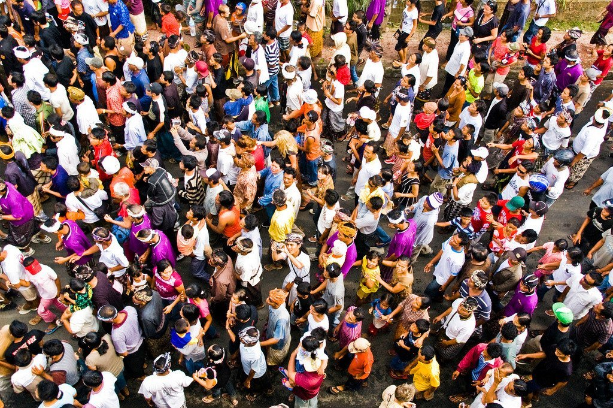

LA SITUACION DEMOGRAFICA MEXICANA
Por ello la tasa de crecimiento de la población es sumamente elevada. En México, en 1970, la tasa de crecimiento anual fue del 3.48 por ciento, una de las más altas del mundo.
Esta tasa desmesurada, se nos dice, provoca fatales consecuencias. La presión demográfica, además de exigir un incremento de los satisfactores de subsistencia -alimentos, vivienda, vestido, etc.-, reclama un incremento geométrico de toda la infraestructura de comunicaciones, transportes, instalaciones urbanísticas, etc. Inclusive, aseguran los expertos, el crecimiento demográfico incontrolado está produciendo una extraordinaria presión política y social.
A pesar del alto crecimiento económico que hemos tenido (esta tasa fue del 7.1 por ciento anual acumulativo, en el periodo 1960-1969), persisten grandes disparidades socioeconómicas y culturales entre diversos sectores de la población. La constante migraci&aocute;n de las zonas rurales a las urbanas, refleja insatisfacción de los habitantes rurales con sus localidades de origen y responde, principalmente, a la falta de oportunidades de empleo y servicios educativos. (CONACYT, 1976.)
Natalidad y mortalidad
La mortalidad general del país ha descendido de un promedio de 23.2 defunciones por cada mil habitantes en 1940 a 9.7 en 1970. No obstante lo anterior, es importante señalar que el descenso de la mortalidad se ha traducido en un aumento considerable de la esperanza de vida del mexicano al nacimiento, ya que en 1940 era de 41.5 años y en 1970 se elevó a 62.1 años. Asimismo, la mortalidad infantil descendió de 124.6 defunciones de menores de un año por mil nacidos vivos en 1940, a 67.4 en 1970.
Probablemente los altos niveles de natalidad en México estén determinados en gran medida por las estructuras sociales y sicológicas existentes. La estructura social, al igual que la demográfica, es de tipo piramidal, en la que predominan los segmentos tradicionalistas y cuyos patrones de formación familiar difieren del sector modernista que numéricamente es inferior al primero.
CRECIMIENTO NATURAL DE LA POBLACION, EZPERANZA DE VIDA AL NACER Y REPRODUCCION (1940-1970)
Indicadores demograficos |
1940 |
1950 |
1960 |
1970 |
Natalidad (tasa por millar) |
44.3 |
45.5 |
44.6 |
43.3 |
Mortalidad (tasa por millar) |
23.2 |
16.2 |
11.2 |
9.7 |
Esperanza de vida al nacer (años) |
41.5 |
--- |
--- |
62.1 |
tasa bruta de reproduccion (hijas) |
3.06 |
--- |
--- |
3.19 |
Tasa de crecimiento anual (%) |
menor a 2 |
2.7 |
3.1 |
3.48 |
Distribución de la población
La proporción de población que vive en localidades de más de 15 mil habitantes respecto de la población total, es un indicador del grado de urbanización del país. Esta fue en 1940 del 20 por ciento, distribuida en 123 localidades urbanas, que en su conjunto sumaban 13 millones de personas, y en 1970, del 43 por ciento distribuida en 192 localidades con una población de 20 millones. Lo anterior implicó una tasa anual de 4.6 por ciento de crecimiento.
De la misma forma, debido al proceso de crecimiento y diversificación urbana, en el periodo 1960-1970 se registraron los cambios siguientes: mientras que en 1960 existían 15 ciudades con una población mayor a 100 mil habitantes que concentraban al 24 por ciento de la población total, en 1970 esta relación cambió al 30.9 por ciento, distribuida en 35 ciudades.
Por otra parte, se estima que el incremento de la población urbana puede ser explicado en un 67 por ciento por el crecimiento natural y en un 33 por ciento por la migración, para el periodo 1960-1970, y con una tasa de urbanización del 5.4 por ciento anual, considerada como una de las más altas del mundo. O sea, en los &oucute;ltimos decenios la población urbana se ha triplicado.
Crecimiento de la población
Hasta 1940 la tasa de crecimiento medio anual de la población había estado por debajo del 2 por ciento. Es a partir de este año cuando la tasa sobrepasa dicho nivel. Así, para la década 1940-1950, la tasa subió al 2.7 por ciento, y en el siguiente decenio al 3.1 por ciento. Actualmente se estima que es del 3.48 por ciento.
José B. Morelos, investigador de El Colegio de México, señala, en el estudio ya citado, que: probablemente, hasta la década de los cincuenta el crecimiento de la población junto con el aumento de sus efectivos haya favorecido el desarrollo del país en cuanto el aumento de la población significó el crecimiento de la demanda. Además de estimular la diversificación de la producción, este fenómeno demográfico se tradujo en la ampliación del mercado interno, una de las condiciones requeridas para el desarrollo.
Recordemos que el modelo de desarrollo económico mexicano estimula el uso intensivo de capital en vez de mano de obra intensiva, lo cual origina una desigual distribución de la riqueza y una marcada dependencia económica.
De esta manera, el crecimiento de la población en relación con este modelo de desarrollo económico, adquiere características alarmantes. Desde luego que no por el crecimiento en sí mismo, sino por su relación con dicho modelo.
